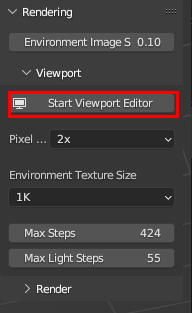
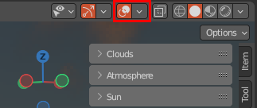
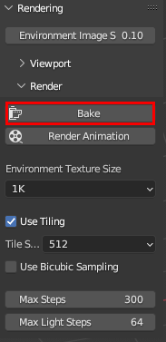
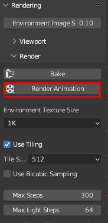
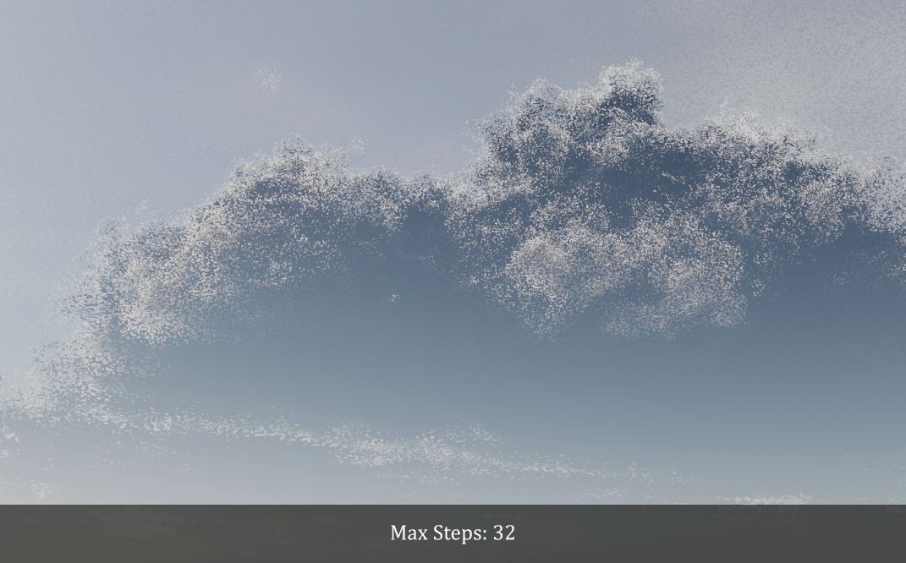

Usage/Rendering
Note
This page is under construction.
Usage Tutorial
Viewport Editor
The viewport editor allows you to create and edit skies easily and efficiently. Real-time feedback gives you the power to quickly generate a variety of sky environments that meet your needs.

Getting Started
Navigate to the Stratus tab in the 3D viewport. In Rendering under Viewport, click Start Viewport Editor.

Ensure that Show Overlays is enabled.

To stop the Viewport Editor, press the ESC key.
Environment Texture Size
This is the size of the environment image that is baked every time a change is made to your sky. It’s best to keep the resolution low (1K), since the purpose is to give you real-time feedback, so you can get a good feel for the lighting before commiting to the final bake/render animation.
Max Steps/Max Light Steps
The steps used when rendering to the viewport. It’s best to keep these low enough to maintain real-time feedback.
Important
If the Viewport Editor is enabled and you make any changes to the Stratus menus, or change frames, any HDRI that was baked previously will be overwritten with the viewport render settings.
Bake
This operator bakes a single HDRI image of your cloud scene.
Getting Started
Navigate to the Stratus tab in the 3D viewport. In Rendering under Render, click Bake.

The HDRI will be saved in Blenders images as STRATUS_ENV_TEX.
The time taken to bake an image will be in the Blender info window/console.
Render Animation
If you want to animate the Stratus HDRI, you must use this operator to render your animation. Due to how Stratus was built and how Blender works, you cannot use Blender’s Render > Render Animation.
The only limitation of the render operator is that Blender will be unresponsive when rendering, and you cannot use video output formats such as AVI JPEG, AVI Raw, or FFmpeg Video.
Getting Started
Navigate to the Stratus tab in the 3D viewport. In Rendering under Render, click Render Animation.

The time taken to render each frame will be in the Blender info window/console.
Warning
Render Animation will freeze Blender until the job is done!
General Render Settings
Environment Image Strength
The strength of background node in the world shader. The purpose of this is to ensure consistency between the Blender render engine and the viewport editor.
Environment Texture Size
Determines the resolution of the HDRI image. The option will be a multiple of 1024 x 512 pixels. i.e.
(1024 x 512) * size
Max Steps
This setting controls the maximum number of steps taken while moving through the cloud layer. Increasing the number of steps will improve the quality of the cloud visuals, but it will also result in longer render times.

Max Light Steps
This setting controls the maximum number of steps taken while approaching a light source. Increasing the number of steps will improve the quality of the cloud visuals, but it will also result in longer render times.

Tip
The ideal number of steps will vary depending on cloud size, thickness, density, and other factors. Once you have achieved your desired cloud appearance, fine-tune the number of steps to strike a balance between rendering speed and visual quality.
Tiling
Rendering the HDRI as tiles can help reduce memory usage and prevent GPU stalling by rendering smaller portions of the image at a time. Generally, this is useful for when working with large image sizes (i.e. 8K, 16K, 24K) but depending on your hardware, it could be beneficial to use at all resolutions.
Bicubic Sampling
Bicubic sampling is a way to preserve the fine details when magnifying textures. The result is a smoother and more accurate image, at the cost of 4-8 more samples.
Note
Bicubic sampling is not applied in the viewport editor.
Bicubic sampling off |
Bicubic sampling on |
|---|---|
|
|


Tip
Since bicubic sampling is very expensive, it’s best to avoid unless absolutely needed. Blinear artifacts will generally show up when using the cirro cloud layer when the size is maxed out.
Pixel Size
Similar to Cycles, you can alter the pixel size for the viewport rendering. This can greatly speed up render times.